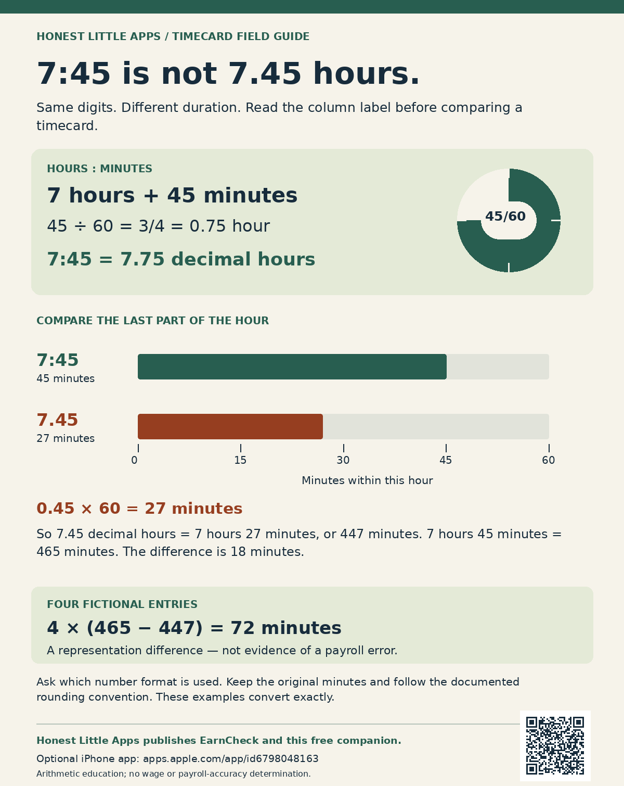

7:30 and 7.30 differ
As a duration, 7:30 means 7 hours and 30 minutes. A decimal duration of 7.30 hours means 7 hours and 18 minutes: 0.30 × 60 = 18.
SMALL DETAIL. DIFFERENT NUMBER.
An hour has 60 minutes. Decimal hours express minutes as a fraction of an hour. Learn to spot the difference before you read your next timecard.
Try six quick examples ↘Free browser practice · No signup · No data saved
30 MINUTES
= 0.50 HOURSOne hour. Two ways to write it.TRY IT / SIX CARDS
Choose the same duration expressed in decimal hours. These are fictional examples, not a test of your payroll system.
Card 1 of 6
HOURS : MINUTES → DECIMAL HOURS
Choose an answer to see the math.
THE RULE TO KEEP
See the 7:45 versus 7.45 comparison card.
As a duration, 7:30 means 7 hours and 30 minutes. A decimal duration of 7.30 hours means 7 hours and 18 minutes: 0.30 × 60 = 18.
Check whether a timecard shows hours:minutes or decimal hours. Ask for clarification if the format is unclear. A formatting difference alone does not establish a pay error.
Compare the rounded rows with the weekly total using your original hours and minutes.
For repeating decimals, retain the original minutes and follow the documented rounding convention. This activity uses examples that convert exactly to two decimal places.
| Minutes | Fraction of an hour | Decimal hours |
|---|---|---|
| 15 | One quarter | 0.25 |
| 30 | One half | 0.50 |
| 45 | Three quarters | 0.75 |
| 60 | One whole | 1.00 |
A SMALL TOOL FOR YOUR WORKSHEET
Check an hours-and-minutes duration beside a decimal duration. The compact tool labels display rounding and calculates no wages or entitlement. It does not save or transfer entries to EarnCheck.
Open the compact tool on its own
Use the compact tool beside a timecard lesson or worksheet. No account, hidden tracker or mandatory backlink is required. Visible attribution identifies its publisher. The iframe makes standard hosting requests; inputs stay within the frame.
<iframe src="https://udrwu9c0tjuedqy2.github.io/hla-work/earncheck/timecard-format-practice/separator-widget.html" title="Hours and minutes versus decimal hours checker" width="100%" height="1050" loading="lazy" sandbox="allow-scripts allow-popups allow-popups-to-escape-sandbox"></iframe>NEXT: KEEP YOUR OWN SHIFT RECORD
EarnCheck lets you record shifts and compare estimated gross earnings with a pay statement. Keep the arithmetic beside the record.
View EarnCheck on the App Store ↗Free tier and optional Pro subscription. See the listing for current pricing and limits. Requires iOS / iPadOS 18 or later.
Review differences with the relevant records before drawing conclusions.
A VISUAL TO KEEP / ORIGINAL WORKED EXAMPLE
As durations, 7:45 means 7 hours 45 minutes, while 7.45 decimal hours means 7 hours 27 minutes. The graphic compares the last part of the hour and shows how the distinction adds across four fictional entries. It does not identify an error in any real pay record.

Download the comparison image (PNG) Vector version (SVG)
Check the column label and keep the original minutes. Follow the documented rounding convention when a decimal repeats; this example converts exactly. Honest Little Apps publishes this free educational companion and EarnCheck. The graphic is not a native app screenshot or a statement about wages owed.
No. 8.25 hours means 8 hours 15 minutes. The decimal part is a fraction of 60 minutes.
No. This is a separate educational browser companion from Honest Little Apps, the publisher promoting EarnCheck. The exercise is not an app screenshot or a demonstration of native app functionality.
No. Answers stay in this page's memory and disappear on refresh. No account or tracking script is used here; the hosting service may process standard request logs.